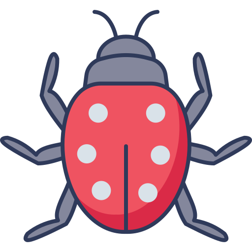
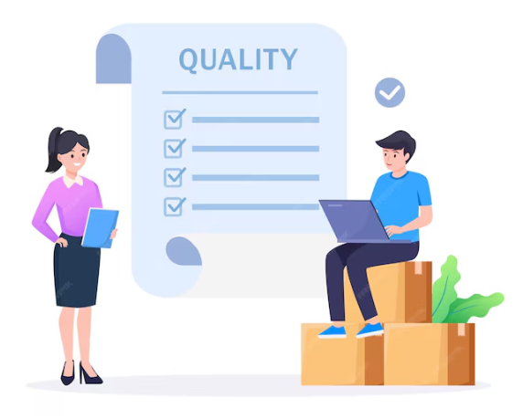
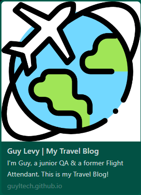
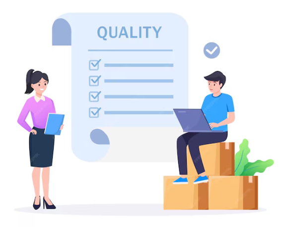
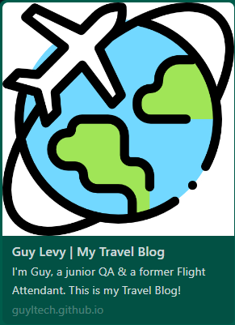
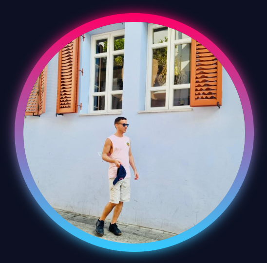

Hi, I'm Guy Levy
QA Junior
"Bug Hunter" 
Welcome To My Website
About Me
I am a QA Junior from Tel Aviv. I have a beautiful Doberman, his name is Justin.
The gym is my happy place! I love getting a workout in every single day. Taking care of my health is a core value for me. I strive to eat well, exercise regularly, and get enough sleep.
I'm a big believer in self-directed learning, and online tutorials have become my go-to resource for acquiring new tech skills. They allow me to explore at my own pace and delve deep into specific areas that pique my interest. My two favorite e-learning platforms are Microsoft Learn and Udemy.
As a former Flight Attendant, I had the amazing opportunity to travel the world and witness some of the most magnificent sights. Out of all the places I've traveled to, Bangkok, New York, and Madrid really stood out to me.
Contact MeProfessional Experience
With over 5 years dedicated to SEO (Search Engine Optimization), I've honed my skills across multiple open-source CMS (Content Management Systems) platforms. I thrive on the challenge of optimizing websites and leveraging technology to drive organic growth.
My SEO background has equipped me with a strong attention to detail, enabling me to identify even the smallest defects that impact user experience and search engine visibility.
This experience has honed my problem-solving skills, allowing me to effectively identify and address issues that hinder website performance and user satisfaction.
I'm adept at identifying and troubleshooting website issues, which translates well to the world of QA testing. I'm confident that my ability to analyze UX (User Experience) would be valuable in ensuring software functionality meets user needs.
Why QA

I've always been passionate about coding. I studied Computer Science in high school and continued my education with a .NET programming - ASP.NET course.
But my true passion lies in QA and and Bug tracking. There's something incredibly satisfying about untangling complex issues and ensuring everything functions smoothly. I love the intellectual challenge of working through problems and finding elegant fixes.
I'm a highly organized and detail-oriented individual with a strong emphasis on thoroughness in my work. I enjoy the efficiency of working according to checklists and established procedures. As a committed and hardworking professional, I am confident in my ability to be a valuable asset to your team. I look forward to hearing from you.
Add me to your teamProjects
Under Construction...
 




Keep in touch: